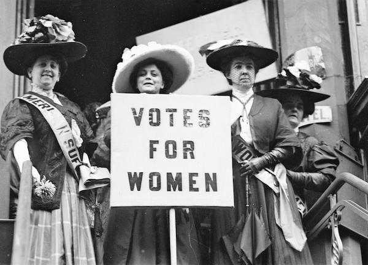
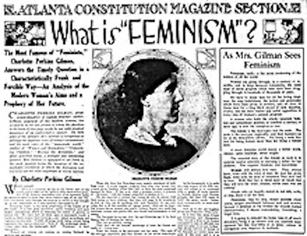
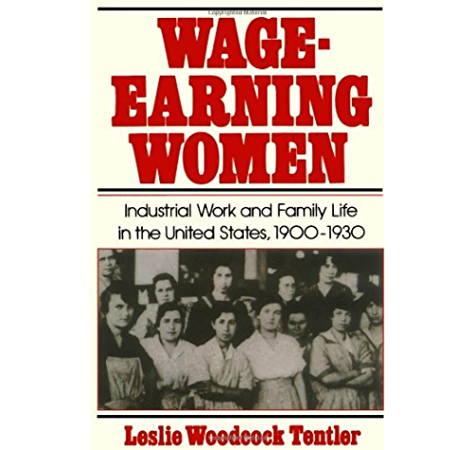

In the latter half of the 1800's, women in the USA began rebelling against the societal notion that women's lives revolve around the home. Women began to leave the home more often and socialize, and with that came a desire to have equal rights.
Goals of the Movement
-

Right to Vote
Gaining the right to vote, or "suffrage" was paramount.
-

Growth of Feminism
At a time when women were expected to be at home, women challenged the norm and fought to be able to be more independent and in control of their own lives.
-

Right to Work
Women wanted to be able to work outside the home, and the number of women in the workforce boomed towards the end of the 19th century.
Susan B. Anthony
Susan B. Anthony was the best-known women's suffrage proponent of her time, and her fame led to her image gracing a U.S. dollar coin in the late 20th century. She wasn't involved in the 1848 Seneca Falls Women's Rights Convention that first proposed the idea of suffrage as a goal for the women's rights movement, but she joined soon after. Anthony's most prominent roles were as a speaker and strategist.
Elizabeth Cady Stanton
Elizabeth Cady Stanton worked closely with Anthony, lending her skills as a writer and theorist. Stanton was married, with two daughters and five sons, which limited the time she could spend traveling and speaking. She and Lucretia Mott were responsible for calling the 1848 Seneca Falls convention, and she was the primary writer of the convention's Declaration of Sentiments. Late in life, Stanton stirred up controversy by being part of the team that wrote "The Woman's Bible," an early women's rights supplement to the King James Bible.